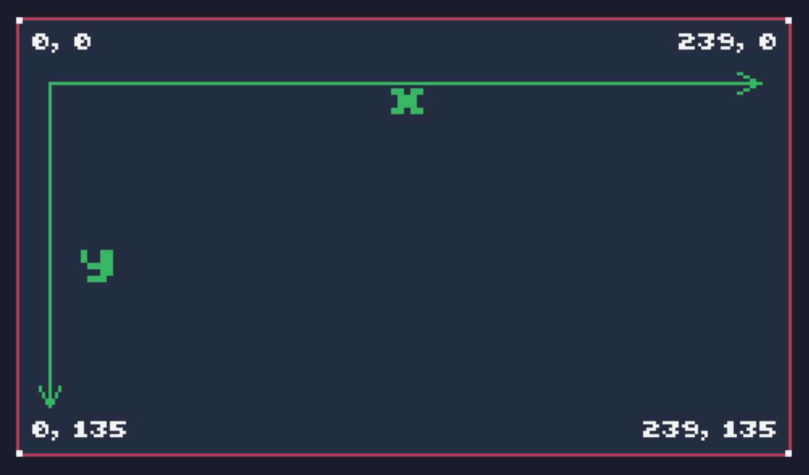

绘制一个红方块
输入new按回车，会新建一个游戏。按F1进入编辑，输入如下代码：
function TIC(
cls(0) --用黑色清屏
rect(10,10,20,20,2) --绘制方形
end
然后，按ctrl+r快捷键运行，会出现下面的效果：

其中，TIC是tic80的循环函数。游戏运行时，屏幕即是画布。人眼看到的游戏，是一个反复清除画布并重新绘制的过程。游戏中绘制任何东西，都需要写在一个循环的函数中。tic80的循环函数名称是TIC。
为了让游戏有更好的结构化，可以采用如下的代码结构：
function input()
-- key event 键盘事件
end
function update()
-- update 更新
end
function draw()
-- draw 绘制
end
function TIC()
input()
update()
cls(0)
draw()
end
上面代码中，我们自定义了update和draw函数。并在TIC函数中，先执行update，然后执行cls清屏，最后执行draw绘制。
按照上面的结构，我们对代码稍加改造：
p={
x=10,
y=10,
w=20,
h=20,
c=2,
r="p" --role=player
}
function update()
-- update
end
function draw()
rect(p.x,p.y,p.w,p.h,p.c)
end
function TIC()
input()
update()
cls(0)
draw()
end
代码分析：
p={
x=10,
y=10,
w=20,
h=20,
c=2,
r="p" --role=player
}
p代表player，为了写代码方便所以没有写全称。w代表宽width，h代表高height，c代表颜色color。
cls清屏函数中，参数为颜色。0代表黑色。
rect是绘制方块函数，前两个参数代表x和y，也就是位置坐标。
tic80屏幕为240*136像素，坐标从左上角（0,0）开始，到右下角（239,135）结束。

坐标之后是大小，两个20代表宽度和高度为20。
最后一个参数代表颜色，从0-15一共16个颜色。2代表红色。
rect(x坐标,y坐标,宽,高,颜色)
关于具体16色，可以参考下一篇，《16色》。